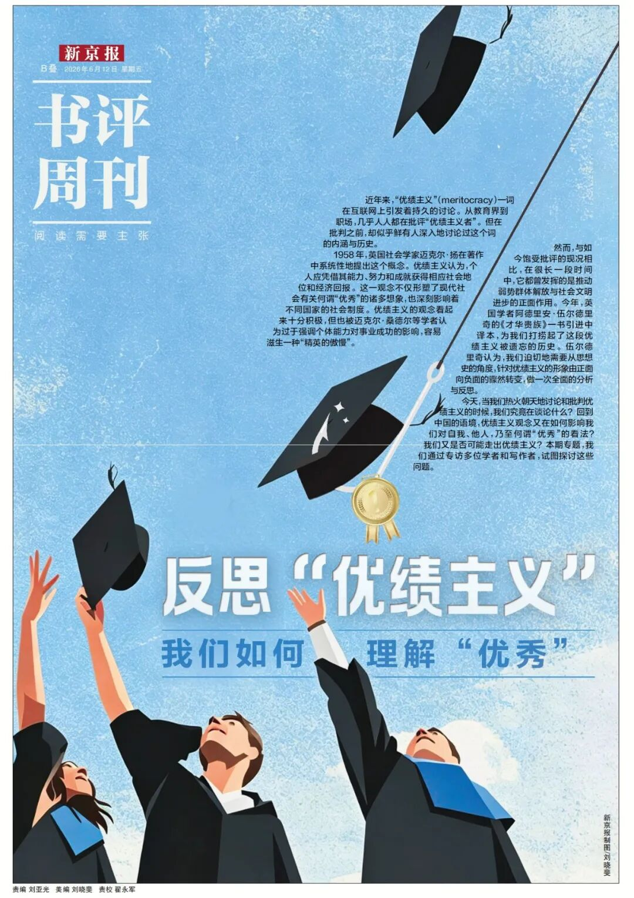
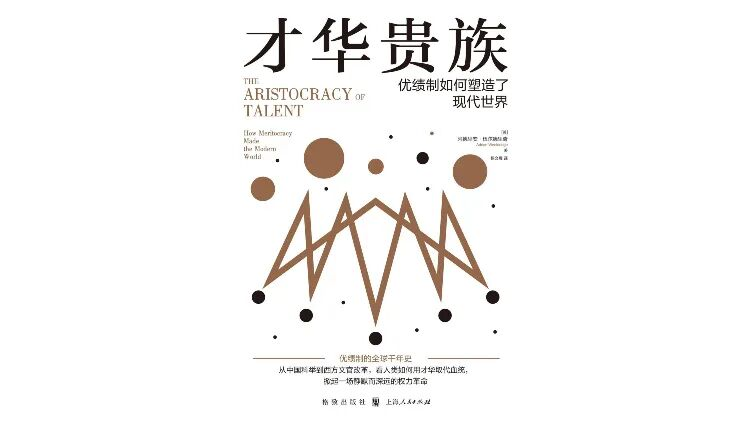
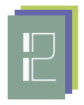
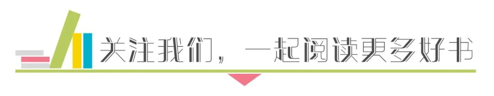
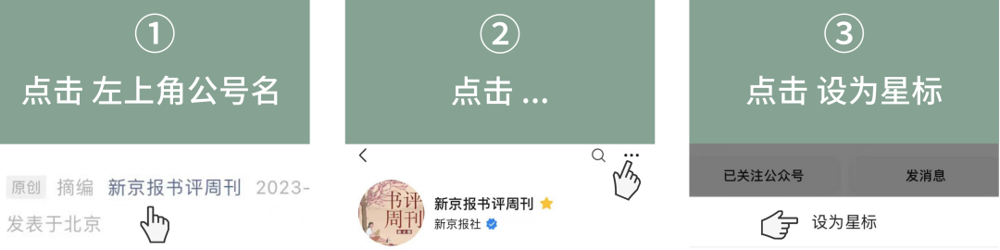
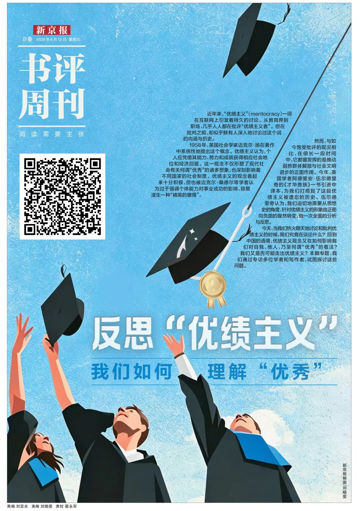
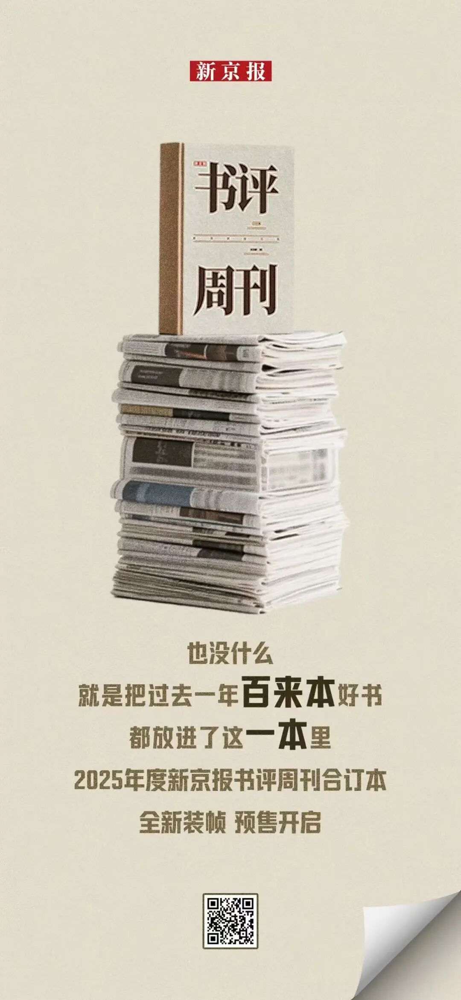

专访林小英：接受教育，最终是为了让我们把日子过得生动
专访林小英：接受教育，最终是为了让我们把日子过得生动
摘要
摘要：专访林小英：接受教育，最终是为了让我们把日子过得生动
作者：刘亚光 来源：新京报书评周刊
一句话总结
（请用一句话概括全文主旨。提示：可结合下方"文章核心问题"与"主要观点"得出。）
文章核心问题
（作者试图回答的中心问题是什么？例如"在 X 条件下，Y 应当如何 Z"。请人工补充。）
主要观点
- 近年来，“优绩主义” （meritocracy） 一词在互联网上引发着持久的讨论。
- 从教育界到职场，几乎人人都在批评“优绩主义者”。
- 但在批判之前，却似乎鲜有人深入地讨论过这个词的内涵与历史。
- 1958年，英国社会学家迈克尔·扬在著作中系统性地提出这个概念。
- 优绩主义认为，个人应凭借其能力、努力和成就获得相应社会地位和经济回报。
- 这一观念不仅形塑了现代社会有关何谓“优秀”的诸多想象，也深刻影响着不同国家的社会制度。
论证结构
文章的结构骨架（按小标题还原）：
（未检测到小标题；请人工补充）
关键概念
林小英、新京报、优绩主义、才华贵族、主题、优秀、当然、精英的傲慢
背景补充
（作者写作时的时代/行业/学术背景，以及读者需要的前置知识。请人工补充。）
值得摘录的句子
- 近年来，“优绩主义” （meritocracy） 一词在互联网上引发着持久的讨论。
- 从教育界到职场，几乎人人都在批评“优绩主义者”。
- 但在批判之前，却似乎鲜有人深入地讨论过这个词的内涵与历史。
- 1958年，英国社会学家迈克尔·扬在著作中系统性地提出这个概念。
- 优绩主义认为，个人应凭借其能力、努力和成就获得相应社会地位和经济回报。
- 这一观念不仅形塑了现代社会有关何谓“优秀”的诸多想象，也深刻影响着不同国家的社会制度。
与知识库已有条目的可能关联
（这篇和 KB 里已有的哪些条目主题相近、观点互补或对立？请人工或检索后补充。）
个人阅读提示：这篇文章为什么值得保存
（一句话说明你保存它的理由——是为了某个论点、某个案例、还是某种写法。请人工补充。）
附：首段原文（用于校对）
正文 / 中文原文
专访林小英：接受教育，最终是为了让我们把日子过得生动
作者：刘亚光
来源：新京报书评周刊
发布日期：2026-06-26
原文链接：https://mp.weixin.qq.com/s/BwLPBh-f435DVn-ivvSohQ
近年来，“优绩主义” （meritocracy） 一词在互联网上引发着持久的讨论。从教育界到职场，几乎人人都在批评“优绩主义者”。但在批判之前，却似乎鲜有人深入地讨论过这个词的内涵与历史。
1958年，英国社会学家迈克尔·扬在著作中系统性地提出这个概念。优绩主义认为，个人应凭借其能力、努力和成就获得相应社会地位和经济回报。这一观念不仅形塑了现代社会有关何谓“优秀”的诸多想象，也深刻影响着不同国家的社会制度。优绩主义的观念看起来十分积极，但也被迈克尔·桑德尔等学者认为过于强调个体能力对事业成功的影响，容易滋生一种“精英的傲慢”。然而，与如今饱受批评的现况相比，在很长一段时间中，它都曾发挥的是推动弱势群体解放与社会文明进步的正面作用。今年，英国学者阿德里安·伍尔德里奇的《才华贵族》一书引进中译本，为我们打捞起了这段优绩主义被遗忘的历史。伍尔德里奇认为，我们迫切地需要从思想史的角度，针对优绩主义的形象由正面向负面的骤然转变，做一次全面的分析与反思。
今天，当我们热火朝天地讨论和批判优绩主义的时候，我们究竟在谈论什么？回到中国的语境，优绩主义观念又在如何影响我们对自我、他人，乃至何谓“优秀”的看法？
我们又是否可能走出优绩主义？本期专题，我们通过专访多位学者和写作者，试图探讨这些问题。

本文内容出自新京报·书评周刊6月12日专题《反思“优绩主义”：我们如何理解“优秀”》的B06版。
B01「主题」反思“优绩主义”：我们如何理解“优秀” B02-B03「主题」 阿德里安·伍尔德里奇：优绩主义的“堕落”与“重生” B04-B05「主题」走出优绩主义，为什么这么难？ B06 「主题」林小英：接受教育，是为了让我们把日子过得生动 B07「主题」陆千一：倾听职校生们的表达 B08「中文学术书摘」阅读史和技术伦理研究两则
本专题已刊发文章： 走出优绩主义，为什么这么难？ 陆千一：倾听职校生们的表达

采访 / 刘亚光
在中国， Meritocracy 这个词曾经被翻译为“贤能主义”，而非“优绩主义”。在北京大学教育学院副教授林小英看来，这看似只是一个翻译的转变，背后反映出的是一系列认知和实践的问题。它关乎到社会对于一个“优秀的人”的评价的变迁。
这个翻译的转变，也道出了优绩主义在当代遭遇批评的原因：我们的社会正在被一种审计文化重塑。在这种文化的影响下，社会的各个机构的从业者都倾向于用一种计算式的思维行事。比如，在学校里，教师淹没于无数的考评表格中，学生们用碎片化的阅读和精美的PPT“表演”学习。AI的崛起，则使得这些现象变得更加普遍。
作为一种观念，优绩主义并非只靠个体的信念支撑。社会机构、学校、家庭，在不同的历史阶段，共同支撑着优绩主义观念的地基。它们如此坚固，以至于让我们不愿反省。林小英认为，优绩主义的问题，除了个体的反思，更需要放置在更大的社会环境中去思考。当人工智能的变革席卷社会生活的各个领域，我们也从未如此迫切地需要重新审视教育的目的应该是什么？从家庭到学校、社会，我们究竟又应该期待未来的学生们成为什么样的人？
以下为本刊与林小英的对话：
林小英，北京大学教育学院副教授，主要研究领域为：教育政策研究、质性教育研究、教师专业发展，曾出版专著《县中的孩子：中国县域教育生态》等。
审计文化与优绩主义
新京报：英国学者 伍尔德里奇在 《才华贵族》 这本书中， 讨论了世界范围内的优绩制演进历史。不过讨论亚洲的部分很少。在您看来，书中讨论的欧美优绩主义问题和中国的有什么不同？
林小英： 《 才华贵族》这本书和前面的基本讲优绩主义的书不太一样。包括《精英的傲慢》《精英陷阱》其实更多提供一个当代的切片，讲我们当代有哪些问题。伍尔德里奇这本书提供了历史的视角，这个视角会让我们看到，我们当下讨论的优绩主义问题，并非独一无二的问题。而且也能更客观清醒地看待优绩主义 ——为了获得它，我们曾经冒着巨大的风险，也做过很多斗争。
对优绩主义，不论是褒扬也好，还是批判也罢，本质上都是一种心智活动，它其实也需要闲暇和余裕。每天都忙于生计，可能就很难去反思优绩主义的事情。但其实中国的普通老百姓对优绩主义可能有更深的感受和理解。我们是一个有着最长久俸禄制历史的国家。通过考学，为官一任，造福一方。过去我们对这些国家公务员的要求是 “德、能、勤、绩、廉”。从这个角度来讲，如今我们讲的优绩主义 Meritocracy 这个词，是一个比较西方的译法。曾经在大概 2000-2010 年间翻译是“贤能主义”，这是一个更符合我们中国语境的翻译。
贤能主义同时强调的是才华和品德，即你的能力应该服务于公共善。就像张载讲的，为天地立心，为生民立命，为往世继绝学，为万世开太平。这和现在优绩主义中提倡的那种原子式的、专注于与他人竞争和比较的个人是完全不同的。 所以，我认为从中国本土的历史出发去考察优绩主义概念，在今天也是非常必要的。因为这看起来只是一个翻译问题，实际上翻译问题能带来观念的陷阱。优绩主义让现在很多人痛苦，可能和我们对它的理解本身出了问题有关。

《 才华贵族：优绩制如何塑造了现代世界 》
作者 : [ 英 ] 阿德里安·伍尔德里奇（ Adrian Wooldridge ）
译者 : 杨文展
版本 : 格致出版社
2026 年 1 月
新京报：迈克尔 · 杨 的《优绩主义的兴起》是关于这个话题的另一个核心读本。书里他对 “优绩”的看法，概言之即“努力 + 天赋”，而优绩主义鼓励社会各个机构根据优绩的维度分配社会所得。这个提倡原本是很“正能量”的，为什么现在大家都在批判？
林小英： 为什么好像不同的社会都逐渐从提倡贤能主义转移到提倡优绩主义了呢？或者说为什么贤能主义逐渐消退，优绩主义这个词成为一个大家都在用的热词呢？迈克尔 ·鲍尔 （ Michael Power ） 1994 年出版的一本书《A udit society 》对当代社会有一个非常关键的诊断。他以前是四大会计事务所之一的一个注册会计师。我们都知道，咨询公司拿的薪水很高。鲍尔认为，咨询公司代表的一种审计文化在逐渐席卷各个行业。当大家竞争越来越激烈，尤其是股份有限公司想要上市，就要出一个年报来向股东交代，这个动作意味着内部的业绩必须要接受外部审查。那么什么样的业绩是能够接受外部审查或者说“可见”的？一定是有一个“可通约”的版本。所谓审计文化，其实就是我们的每一个指标都要具备通约性和可问责性。
这时候某种内在的标准就不再行得通了。比如我们说贤能，但贤这件事怎么测量和问责，谁来判断贤不贤？但优绩是可以衡量的。我们现在也完全可以看到鲍尔的判断是准确的。各种机构，从私营的到公立的，每年都一定要有标准化的业绩出来，要可见，能给别人一个交代。哪怕是个人，我们也必须把自己的 “门户系统”比如简历弄的一丝不苟。
通过审计的企业，最容易获得外部的认可，这让这种文化首先在市场里蔓延开来。那么对于公共部门来说，鲍尔认为，原本最不应该被审计文化影响的两个行业，现在最容易被审计，一个是学术，一个是医疗。这个我们今天都很熟悉了，学术方面就是针对论文的一系列考评体系、影响因子、课时数，外部更宏观的有大学排行榜。但是很明显，教育受到审计文化影响后，大家的感受都变糟糕了。
因此我们说， 21 世纪也兴起了一种“逢进必考”的文化，一定程度上，它当然也加剧了竞争。 优绩主义从此也不再仅仅是学校里面的事情，它和你晋升、跳槽，都有关系，都要按照可通约的成绩来。现在出现的更值得担心的事情恐怕是，每个个体都成为了一个自我审计的主体，执行着一套自我会计程序，达到自我监控：每年、每个季度我的工作指标有没有完成？到了某个年龄我是不是应该达到一定的职位？必须算的明明白白，我们才觉得日子能过得下去。

优绩主义很难共情失败者
新京报：如《才华贵族》这本书的书名，优绩制文化其实非常看重一个人的“才华”，或者说能力。您读书的时候，和现在你见到的精英大学里的学生们，你觉得对 “才华”“能力”的界定有什么差异？人工智能时代下，这种对能力的界定是否会受到冲击？
林小英： 我认为AI 的到来，它取代的恰恰是人类在二战之后形成的技能。 两次世界大战后，我们社会最崇尚的其实就是科学主义。大量的科技被普通人掌握，我们的日常生活也被技术全方位改变，这其实就是近 80 年发生的事情。但这一切技术现在似乎在被AI 集成，它成了一个集大成的技术界面。这会让我们焦虑和惶恐：那我们人还能做些啥？
现在最宝贵的恐怕还是一个提问的能力。之前“得到”编了一本书叫《 1000 天后的世界》，我参与其中一篇对未来教育的写作。我设计了一个戏剧的形式，通过向AI 提问，让AI 假扮成卢梭。我问AI ：如果你是卢梭活到了今天，AI 出现了，你会怎样像你当年批判法国的贵族教育和天主教教育的时候那样，批判当下的AI 呢？这是一个我基于自己的生命体验和对经典作品的阅读，提的一个“我自己”真的想问的问题。我相信，没有这些体验的人，不会这么提问。
新京报：最近出现了一个趋势 ： 年轻人开始产生 了一种 “优绩主义羞耻”，大家在社交媒体上竞相和优绩主义“割席” 。 但另一面，好像各个领域的 “卷”好像一点没有减少， 大家还是在学业、工作上更加激烈地竞争。 你有观察到类似的现象吗？
林小英： 我们中国人其实很早就认识到，一个人的成功，需要的是所谓 “天时地利人和”——个人努力，社会因素，时代机运，缺一不可。如伍尔德里奇所说，一个社会，当然需要有优绩主义来鼓励人们向上攀登，但不能只有现在我们讲的这种强调个人竞争的优绩主义，一定还要有让社会的不同群体能连接起来的另外的原则。一旦你特别成功了，你应该怀抱有谦卑之心。 从这个意义上，我们也可以说，社会不仅需要形成资源的再分配机制，还应该有道德的再分配机制。 对精英，理应有更高的、公共意义上的道德要求。现在一个比较麻烦的情况是，这种强调不同群体之间相互连接的维度被取消了，大家的目光开始都盯着个体的才华与努力。这就容易形成桑德尔说的“精英的傲慢”。
优绩制在现在社会的问题，是它所谓根据个人才华分配成就的这个模式，是 “层层累加”的。比如你得了一个奖项，那么它就会变成追逐下一个奖项的资本。当你获得某个资格之后，才能通往下一个资格。起初你们可能在优绩的排名里只有一分差距，到后面就会到 1 万分。体现在心态层面，当然我们就会担心自己“一步错，步步错”。
同时，当你好不容易成为了最后的赢家，你当然就很难共情失败者，因为你的成果过于来之不易了。所以说，优绩主义为什么在今天饱受诟病，会蜕变成如伍尔德里奇所说的一种新的特权？我想，这里面其实也是个人性的问题：早期的成功者永远会面对一个去进一步扩大自己优势的诱惑。 因为这个优绩制的环境没变，在一个优绩制的社会中，向下坠落的通道永远是打开的，在上面的人永远怕坠落。成功者知道自己曾经的艰难，他们更担心自己再次处于失败者的位置。 美国精英大学的 “赞助式入学”就是一个典型的例子。反过来，某种程度上，现在我们很喜欢底层逆袭的故事，这本质上也反映出优绩主义的深刻影响。
优绩主义与学习的“功利化”
新京报：你之前做过一个研究《不学而有术：研究型大学文科学生的读书法》，其中提到一个很普遍的现象 ， 现在的大学生—— 尤其是 文科学生 ， 面对需要阅读的经典 的时候， 更多采用了一种 功利性的阅读方式：不精读全书，而是碎片化阅读，或者用二手的解读乃至AI 的解读完成相关作业 。 这种学习方式有什么问题？ 为什么阅读的 “整全性” 依 然重要？
林小英： 文科学生上学的时候都会被要求看很多专著，要交读书报告，现在很多时候大家都是直接用AI 提炼核心意思，然后搜几篇二手的书评，就把这个作业完成了。这种阅读其实除了记住书名之外，可能啥也没留下。当然，我做学生的时候即使没有AI ，其实也这么干过。因为有时候直接读经典的原著，确实读不懂，但读和没读是有明显差别的。你认真读了，即使完全没懂，那也是种下了一个种子，日后会发芽的。
读书其实分两种，首先是我们为写论文做的任务式阅读，这种碎片化的或者说比较功利化的阅读，其实有时候是会摧毁你对这本书的兴趣的，研究一做完，你可能压根就不想再碰这个书了。它是为了在一个优绩的意义上，产出一篇看得见的、不错的成果。真的想把问题搞明白，还是要做另一种整本书的精读，这是 “练内功”。比如 2007 年开始，我带着学生一本本读哈耶克，完全由我导读。后面 5 年，我基本上没出去开过一次学术会议。这个效果不是短期能看出来的，但是我这几年做的研究，包括在媒体上的表达，其实都和这种“内功”相关。
在 AI 时代，我认为我们面对阅读的态度需要有一个非常大的变化。过去，我们是要有弄懂问题的勇气，现在，是要有承认自己读不懂的勇气。 什么意思？AI 现在创造很多幻觉，它在阅读上创造的最大的幻觉就是能让我们假装自己懂了。 AI 拆解一本书，能给你生成非常多“精致的行话”，看上去条理清晰，其实空洞无物。这和我们很多同学现在通过碎片化的阅读形成的对一本书的认识是非常类似的。再加上，现在整个学校的文化是优绩主义式的，大家在意能展示出来、能审计的东西，所以读完了之后即便似是而非，也要做出一个 ppt 来展示，更加助长了这种趋势。我在研究生课堂里布置大家阅读经典，有时候，我会觉得这些上来的学生如果之前完全没读过这些经典，可能更好——起码比读的似是而非，然后不懂装懂要好。
面对人工智能，我们尤其需要真诚地面对阅读和学习这件事 ——当然，这也和挣脱优绩主义的那种可量化的比较有关。我们要进入到书的“脉络”里去，进行一种语境化的阅读。书中重要的不是知识，而是这个内容和你的智识、你的五官六感之间的关联。 如果把知识抽离出来，变成用来获得某个目的的 power ，那它就真的成了一个“ power point ” , 孤立的知识点，那是你的身外之物。
现在学生探索自我的最大阻力，
恐怕来自于家庭
新京报：优绩主义革命最初在西方校园兴起的时候，其实是对之前那些贵族 “乖学生”形象的颠覆，是一场那些学习好的平民家庭出身的学生，对上层社会出身、彬彬有礼的学生们的反叛。但中国现在的情况似乎非常不一样，优绩主义游戏中的赢家反而清一色的是“乖学生”，甚至被人概括出叫“好学生人格”。而这些学生走入职场，更容易发现落差。你会怎么看待“好学生”的这种“碰壁”现象？
林小英： 现在你在学校里是优秀的，确实不代表在职场里也是最优秀的。甚至可能在学校里优秀的人，在职场有更重的 “学生气”，反而更容易受挫。就我的接触学生来看，导致这种过渡困难的原因很多，首先是现在的学生好像特别怕犯错，然后犯了错，提问和求助也成了一种羞耻。学生们很强调边界感，这点从日常生活的各个方面都能看出来：寝室里每个人更顾着管好自己的一亩三分地；平时学习考试更讲究一个人学，甚至怕别人知道自己在学什么。我觉得这可能也和现在校园个人竞争的文化太强有关。大家会有防备心，也会去计算自己在人际关系上的投入值不值得，说某句话能不能达到相应的目的。久而久之，这种边界感建立之后，大家就说自己社恐、是 i 人，这些都不利于职场的进步和发展。
所以有些时候，我们在职场上说一个人 “眼里没有活儿”，这不见得是一个情商问题，很可能是他在这种复杂的人际互动环境里不知道怎么去甄别和决策，不知道一个事儿他做还是不做。内心里纠结了百转千回，最后行动上一点没动。现在好像还出现了很多词汇去美化这件事，比如“边界感”、“自洽”、“不要介入他人因果”，我是比较反对这些说法的。我承认学生们变成这个状态，并不都是自己的原因，但起码要看得见问题，不能去合理化它。
学生们变得害怕风险，这里面有很多深层的原因。《爱，金钱与孩子》这本书有一个分析，经济的不平等，是优绩主义最好的土壤。经济不平等意味着社会的保护网是并不健全的，大家担心跌落到底层，就会对向上攀登有更强烈的渴望。因此会诞生一批 “直升机父母”，时刻对孩子实施严密的监控和管理，只争朝夕。
我认为现在呈现出的一个重要的趋势是，毕业生选择职业的时候，越来越在意自己家长的看法，同时，家长在这个方向掌控上的影响力确实也在提高。当然，这代家长可能很多本身是优绩主义的成功者，像前面说的，他们很害怕自己的孩子受苦。同时自己也积累了一定的经济实力，也有见识，自然也容易更强势。包括现在家庭的引导、教化资源也越来越向父母集中。过去我们常说七大姑八大姨会 “越界”，为你的工作操心、指指点点，现在可能这种现象也少了，大家都是更多管自己的孩子。当然，孩子肯定是觉得清净了，但也少了一些多元意见的对比和参照吧。阎云翔提出“新家庭主义”，也是指出这个现象——家庭本身呈现出向核心家庭“内缩”的倾向。
所以，没有经济独立之前，孩子确实很难去 “反抗”。 这就导致现在如果大学生们想做一个“异于常规”、或者说努力挣脱优绩主义的尝试，最大的阻力反而来自于父母。 这种沉重的代沟，确实不能不说是一代人的悲哀，也能看出优绩主义在代际间的影响。
我自己有一个可能很 “狭隘”的观点。 我认为我们接受高等教育，最后如果不是要去当一个哲学家的话，终归是为了我们更好地活着，为了把日子生动、可爱地活下去 ，而不是受过教育之后，只懂得如何在心里划分鄙视链、恐惧与他人交往。这背离了我们接受教育的初衷。

本文为独家原创文章。采写：刘亚光 ；编辑：罗东，刘亚光；校对：翟永军，李立军。封面图为电影《银河补习班》剧照。 未经新京报书面授权不得转载，欢迎转发至朋友圈。

最近微信公众号又改版啦 大家记得将「新京报书评周刊」 设置为星标 不错过每一篇精彩文章～🌟



点击阅读原文 查看合订本信息
笔记 默认折叠
阅读笔记：专访林小英：接受教育，最终是为了让我们把日子过得生动
个人批注，结构按"接受 / 反思 / 联想 / 行动 + 阅读提示"组织。 每一节都是 scaffold：脚本已尽可能用启发式填充可从正文提取的部分， 解释性内容（如"我同意什么""联想到哪篇 KB 条目"）留给 WorkBuddy / 读者补全。
一、接受（作者说服我的部分）
（作者哪些观点/论证我认可？为什么？请人工补充。）
二、反思（我仍存疑或需要补充的部分）
（哪些论点证据不足、哪些结论我不同意、哪些前提值得追问？请人工补充。）
三、联想（与其他文本 / KB 条目的呼应）
| 文本 / KB 条目 | 呼应点 |
|---|---|
| （待补充） | （待补充） |
四、行动（我打算做的事情）
- [ ] （待填写：要读的下一篇 / 要做的实验 / 要写下的反驳 / 要更新的笔记）
五、值得摘录的句子
近年来，“优绩主义” （meritocracy） 一词在互联网上引发着持久的讨论。 从教育界到职场，几乎人人都在批评“优绩主义者”。 但在批判之前，却似乎鲜有人深入地讨论过这个词的内涵与历史。 1958年，英国社会学家迈克尔·扬在著作中系统性地提出这个概念。
六、关键概念
林小英、新京报、优绩主义、才华贵族、主题、优秀
七、文章结构（小标题还原）
（未检测到小标题）
八、保留给未来自己的提醒
（请人工补充：下次重读这篇文章时，最该想起的一句话或一个判断。）
九、个人阅读提示：这篇文章为什么值得保存
（请人工补充：一句话说明保存它的理由。）